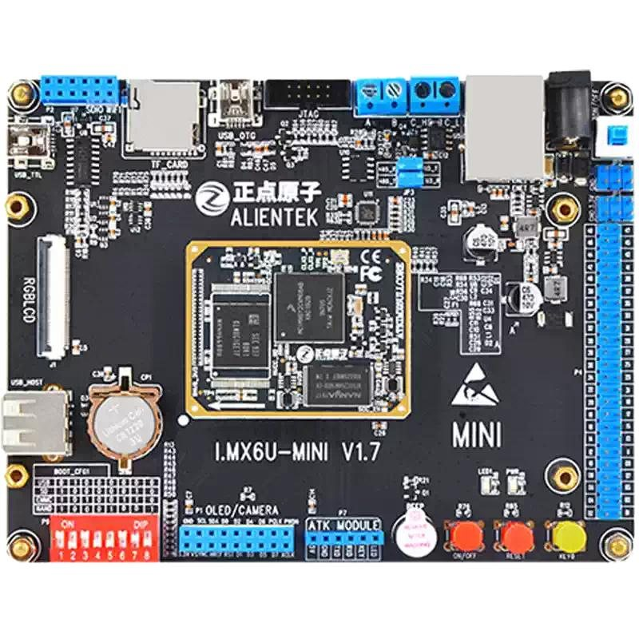
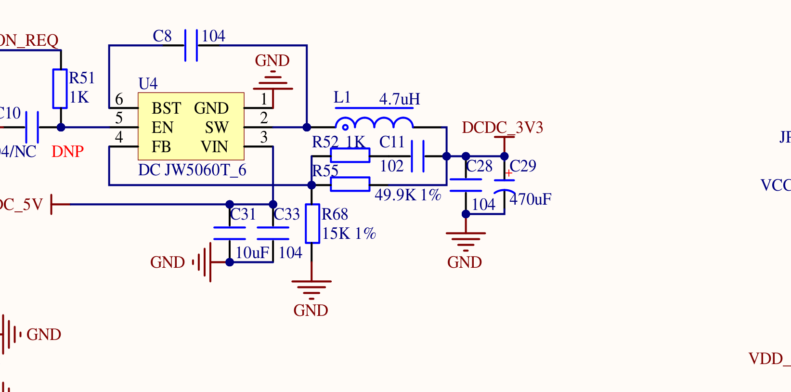

布局：先摆什么、后摆什么、间距怎么定
布线再漂亮也救不了糟糕的布局。布局决定 80% 的信号质量与全部的结构可行性。这一章给一套固定顺序、一张间距约束表，并用本板实物图对照说明。


读完这一章，你应该能
- 按七步顺序完成一次布局，而不是「想到哪摆哪」
- 记住五条硬间距：DDR 10mm、晶振 5mm、去耦 1mm、热源隔离、接口靠边
- 把「干扰源」与「敏感件」分区，知道哪些元件不能挨着
- 用回流路径判断布局好坏，而不是只看「整齐」
5.3.1七步顺序
- 结构：先放定位孔、板框、连接器（DC 座、Type-C、RJ45、排针、LCD 座）。它们的位置由外壳/结构决定，不可移动。
- 接口电路：ESD/TVS、共模电感、限流开关紧贴接口内侧（本板 D1/D2 SMBJ、L3/L4 磁珠）。
- 电源：DC 输入 → 保险丝 → 防反接 → DCDC。输入电容贴 DCDC 的 VIN。
- 主芯片：SoC 放在板中心，靠近 DDR 与主要接口，散热焊盘朝板内。
- 存储：DDR 紧贴 SoC（≤10mm），eMMC/NAND 放在远离 DCDC 的一侧。
- 时钟：24MHz 晶振紧贴 SoC（≤5mm），底下铺地，远离 DCDC 电感与 SW 节点。
- 去耦：最后按 BGA 电源球位置摆放，每颗电容到球 ≤1mm。
顺序的意义：先固定「不能动的」，再优化「能动的」。反过来先摆去耦电容，最后发现连接器位置不对，全部重来。
5.3.2五条硬间距
| 约束 | 数值 | 为什么 |
|---|---|---|
| SoC ↔ DDR | ≤10mm | DDR 走线越短，等长与阻抗越容易控；超过 20mm 反射明显 |
| SoC ↔ 24MHz 晶振 | ≤5mm | 走线长会增加负载电容与干扰拾取，起振裕度下降 |
| 去耦电容 ↔ 电源球 | ≤1mm | 回路电感 >1nH 时电容在 100MHz 已失效（见 4.4） |
| DCDC 电感 ↔ 晶振/模拟 | ≥10mm | SW 节点 dv/dt 大，是主要辐射源 |
| 热源 ↔ 电解电容/晶振 | ≥5mm | 电解液寿命随温度指数下降；晶振频率随温度漂移 |
5.3.3干扰源与敏感件：必须分区
板上元件按「电磁性格」分三类：
| 类别 | 本板例子 | 处理 |
|---|---|---|
| 强干扰源 | 两颗 DCJW5060、L1/L2 电感、RJ45 变压器、USB 5V | 集中在电源区，远离敏感件，下方不走信号 |
| 敏感件 | 24MHz 晶振、RTC 晶振、以太网 PHY 的 RBIAS、ADC 参考 | 靠 SoC、铺地包围、远离电感 |
| 中性 | eMMC、排针、LED、按键 | 可放边缘，优先让位 |
典型翻车：把 24MHz 晶振放在 DCDC 电感旁边 3mm，结果「常温正常、满载偶发死机」——因为电感漏磁耦合进晶振，频率被拉偏。
5.3.4用回流路径检验布局
摆完之后，对每条关键信号问一句：它的回流从哪走？
- DDR 数据线在 L1，回流在 L2 地平面正下方 → 只要 L2 完整，就 OK；
- USB D+/D- 在 L4，参考 L3 电源平面 → L3 若有分割，回流被切断；
- SD 卡信号跨到板边连接器 → 回流路径要从连接器地脚回到 L2，必须保证地过孔充足。
布局阶段就能发现「必须跨分割」的情况，此时调整位置比后期加缝合电容更彻底。
5.3.5本板布局复盘
照着实物图看，能读出设计者的取舍：
- DC 座在左下，紧接 F1、VD2、两颗 DCDC——输入路径最短，减少 12V 大电流走线；
- 两颗 DCDC 电感朝板内，SW 节点远离板边，减少对外辐射；
- SoC 居中偏上，DDR 在其右侧紧贴，DDR 走线短且有空间等长；
- RJ45 在右侧板边，PHY 紧邻，25MHz 晶振贴 PHY；
- 双 USB 在右下，Type-C 与 Host 座并排，MT9700 紧随其后；
- 40pin LCD 与 2×24 排针分居上下，把「用户接口」全部推到板边。
这不是「摆得好看」，而是「每条关键路径都最短」。你改板时如果移动了 DCDC 位置，就要重新审视 5.3.2 的五条间距。
布局间距核算器填入实际摆放距离，逐条判断是否满足约束
SoC↔DDR 8 mm
SoC↔晶振 4 mm
去耦↔电源球 1.0 mm
电感↔晶振 12 mm
热源↔电解 6 mm
练习
1. 布局第一步为什么是结构件？
连接器与定位孔位置由外壳决定，不可移动，先固定它们才能优化其余。
2. DDR 距 SoC 超过 20mm 会有什么问题？
走线长、反射与串扰增大，等长难做，DDR 训练不稳。
3. 去耦电容为什么必须 ≤1mm？
回路电感超过 1nH 后，100MHz 阻抗过高，电容失效。
4. DCDC 电感为什么不能挨着晶振？
漏磁耦合会拉偏晶振频率，导致偶发死机。
5. 怎么用回流判断布局好坏？
看每条关键信号的正下方参考平面是否完整、是否被迫跨分割。
6. 本板为什么把两颗 DCDC 电感朝板内？
SW 节点远离板边，减少对外辐射与耦合。